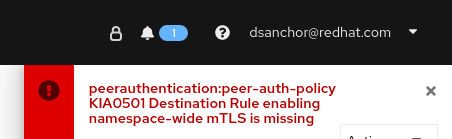

Lab 2 - PeerAuthentication
In this lab, we are going to configure mTLS for all comunications between our existing services.
One of the possibilities would be to auto enable mTLS globally in the mesh during the ServiceMeshControlPlane installation process.
In our case, we chose not to do it that way, so we can reach this lab and enable mTLS in each service to service communication as an exercise to practice with this kind of scenarios.
| This lab about mTLS is very similar to the one we did in Service Mesh - Introduction, but it is required to move to next labs and also, good to remember what we did and how we did it. This time, we will apply the configuration in a few steps only. |
1. Enforce mTLS in our namespace $APPS_NS1
First, we are going to enforce that any service to service communication in our namespace is covered by mTLS.
To do so, we will create a PeerAuthentication object that set the mTLS mode to strict:
$ oc apply -f $LABS_HOME/lab2/peer-authentication-strict.yaml -n $APPS_NS1 peerauthentication.security.istio.io/peer-auth-policy created
When setting PeerAuthentication to STRICT namespace wide, we will get an error in Kiali telling that "Destination Rule enabling namespace-wide mTLS is missing". In our case, we don’t really care, as in this lab, we will enable mTLS service by service in the namespace.

Ignore it for the rest of the lab.
|
Test your application again. It does not work anymore. You should get an error like this one:
upstream connect error or disconnect/reset before headers. reset reason: connection termination
And that is because we are enforcing mTLS and our services have not been configured to support it yet.
To do so, we will take advantage of an interesting Istio feature wich is the ISTIO_MUTUAL traffic policy: we let the proxy serves an Istio managed certificate associated per ServiceAccount to have mTLS without any change in our application.
This ServiceAccount per service will let us identify the caller independently as each ServiceAccount will have a certificate associated to it. We will debug a bit to understand what happens under the covers.
2. Configure mTLS in our services under $APPS_NS1
What will do next is to start setting ISTIO_MUTUAL in our services. We will achieve it by adding a trafficPolicy section of the DestinationRule where will describe the tls mode. In this case, it will be set to ISTIO_MUTUAL.
Let’s first understand the changes that we are going to apply in every DestinationRule. For that, we will get one before applying any change:
$ oc get destinationrule/productpage -o yaml -n $APPS_NS1
...
(let's focus on the spec part of it)
...
spec:
host: productpage
subsets:
- labels:
version: v1
name: v1
Apply the changes:
$ oc patch destinationrule/productpage --type=merge -p '{"spec":{"trafficPolicy":{"tls":{"mode":"ISTIO_MUTUAL"}}}}' -n $APPS_NS1
destinationrule.networking.istio.io/productpage patched
And get again the same DestinatioRule to see the trafficPolicy section that has been added:
$ oc get destinationrule/productpage -o yaml -n $APPS_NS1
...
(let's focus on the spec part of it)
...
spec:
host: productpage
subsets:
- labels:
version: v1
name: v1
trafficPolicy:
tls:
mode: ISTIO_MUTUAL
We do the same for every service. Patch the one for details:
$ oc patch destinationrule/details --type=merge -p '{"spec":{"trafficPolicy":{"tls":{"mode":"ISTIO_MUTUAL"}}}}' -n $APPS_NS1
destinationrule.networking.istio.io/details patched
Then reviews:
$ oc patch destinationrule/reviews --type=merge -p '{"spec":{"trafficPolicy":{"tls":{"mode":"ISTIO_MUTUAL"}}}}' -n $APPS_NS1
destinationrule.networking.istio.io/reviews patched
And last from $APPS_NS1 is ratings:
$ oc patch destinationrule/ratings --type=merge -p '{"spec":{"trafficPolicy":{"tls":{"mode":"ISTIO_MUTUAL"}}}}' -n $APPS_NS1
destinationrule.networking.istio.io/ratings patched
Test the application again and check that is working fine. You can also leave some tests running (don’t forget to change to your domain:
watch -n1 curl -k https://${PRODUCTPAGE_HOST}/productpage
Finally, move to Kiali and select the Security check box in the graph Display options. We should get a lock icon between each service call:

3. Enforce mTLS and configure services in $APPS_NS2
We will apply the same changes in $APPS_NS2:
-
Create a
PeerAuthenticationwith STRICT mode
$ oc apply -f $LABS_HOME/lab2/peer-authentication-strict.yaml -n $APPS_NS2 peerauthentication.security.istio.io/peer-auth-policy created
-
Set
ISTIO_MUTUALin every service.
$ oc patch destinationrule/reviews --type=merge -p '{"spec":{"trafficPolicy":{"tls":{"mode":"ISTIO_MUTUAL"}}}}' -n $APPS_NS2
destinationrule.networking.istio.io/reviews patched
$ oc patch destinationrule/ratings --type=merge -p '{"spec":{"trafficPolicy":{"tls":{"mode":"ISTIO_MUTUAL"}}}}' -n $APPS_NS2
destinationrule.networking.istio.io/ratings patched
We have now finished setting mTLS between all our services calls. We can move now to the first part of the authorization labs.
4. Optional: add namespace-wide DestinationRule for mTLS
In case you want to get rid of the PeerAuthentication validation error, you could create a DestinationRule that would cover all your services in the namespace with mTLS (As you could have checked already, all our services are fully working and have mTLS. We have set it individually instead, but if the validation error really annoys you, feel free to remove it).
This is the YAML file you could use as template, replace $APPS_NS with your namespace before applying (you must do it with both $APPS_NS1 and $APPS_NS2):
apiVersion: networking.istio.io/v1alpha3
kind: DestinationRule
metadata:
name: enable-mtls-ns-wide
namespace: ${APPS_NS}
spec:
host: "*.${APPS_NS}.svc.cluster.local"
trafficPolicy:
tls:
mode: ISTIO_MUTUAL